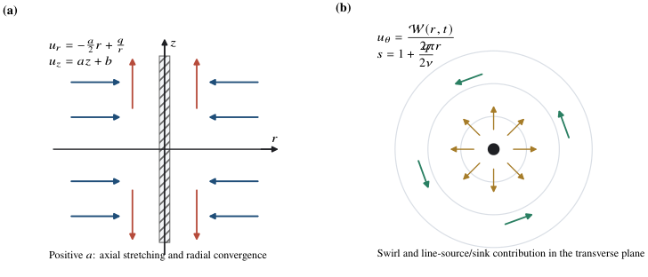
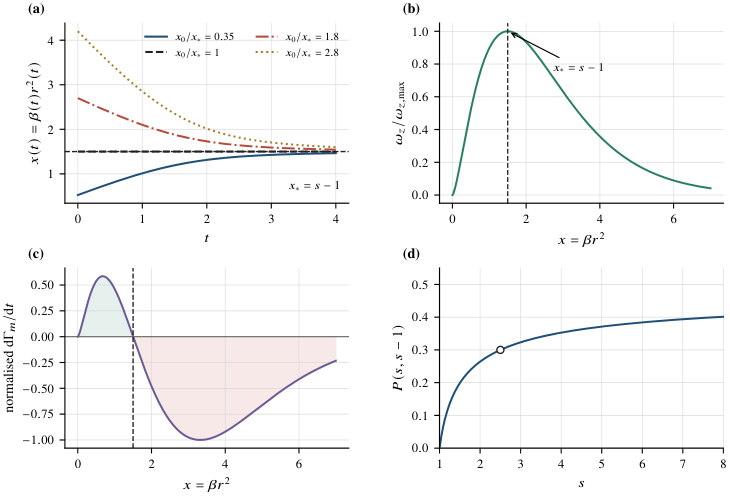
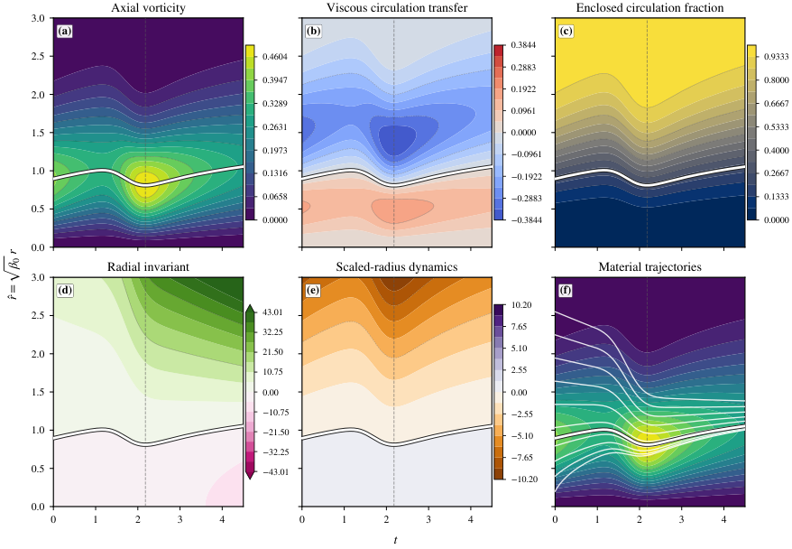

The principal material-circulation result and supporting analytical results are machine-checked in Lean 4 with Mathlib, with the proofs in a versioned GitHub repository.
Abstract
In viscous flow, the circulation enclosed by a deterministic material loop generally changes through vorticity diffusion. It is shown that the source-bearing unsteady Kiknadze–Krasnov vortex possesses a distinguished cylindrical material surface on which this viscous circulation transfer vanishes identically. For a single distributed mode, the scaled squared radius $x=β(t)r^2$ satisfies \[ \frac{\mathrm D x}{\mathrm D t} = 4νβ(t)\big[(s-1)-x\big], \] where $β(t)$ is the inverse squared radial scale, $ν$ is the kinematic viscosity, and $s$ is the incomplete-gamma shape parameter. For $s>1$, the cylinder $x=s-1$ is transported exactly by the radial flow and preserves the inside/outside ordering of fluid trajectories. The same factor $(s-1)-x$ governs the radial vorticity gradient and the material circulation-transfer rate. Consequently, the magnitude of the distributed axial vorticity $|ω_z|$ attains its annular maximum on this material cylinder, $\partial_rω_z=0$ there, and the enclosed circulation remains exactly $ΓP(s,s-1)$ for every admissible prescribed strain history. Neighbouring material cylinders continue to exchange circulation viscously, while the distinguished moving cylinder carries a fixed fraction of the distributed circulation throughout the admissible evolution. In the steady source–strain limit, the surface reduces to the radial stagnation cylinder. The complete velocity and pressure fields, exact radial-scale evolution, admissible parameter ranges, and qualifications for multiple radial scales are also derived. The resulting solution-specific material-circulation invariant provides an exact benchmark for numerical material-surface tracking, vortex-core evolution, and viscous circulation transport, with the principal analytical results additionally supported by machine-checked formal verification.
Problem
In viscous flow, the circulation enclosed by a material loop generally changes through vorticity diffusion. The question is whether the source-bearing unsteady Kiknadze–Krasnov vortex has a material surface on which this viscous circulation transfer vanishes exactly.
Approach
The KK velocity and pressure fields are constructed from incompressibility and the momentum equations, with incomplete-gamma swirl profiles. The radial particle equation is combined with the exact evolution of the inverse squared radial scale β(t). This yields a transport equation for the scaled radius x=βr² and a radial Lagrangian invariant. The principal analytical results are machine-checked in Lean 4 and Mathlib.

Figure 1: Coordinate system and physical structure of the KK flow. (a) Positive a(t) gives axial stretching and radial convergence; q/r adds line-source or line-sink transport. (b) Transverse-plane view of distributed swirl and the radial source/sink contribution; \mathcal{W}(r,t)=2\pi ru_{\theta} is the circulation function and s=1+q/(2\nu) . \label fig:coordinates
Results
For s>1, the cylinder x=s−1 is material and the vorticity magnitude attains its annular maximum there. The enclosed circulation stays exactly ΓP(s,s−1) for every admissible strain history. In the steady source–strain limit, the cylinder reduces to the radial stagnation cylinder; finite-time concentration criteria for the radial scale are also derived.

Figure 4: Exact material circulation structure of a single source-bearing KK vortex with s>1 . (a) Scaled material radii x(t)=\beta r^{2} approach the invariant value x_{*}=s-1 from either side; the trajectory initialized at x_{*} remains there. (b) The distributed-vorticity magnitude is proportional to x^{s-1}\mathrm{e}^{-x} , which has its maximum at the same x_{*} . (c) The signed viscous circu

Figure 8: Exact radial–time structure of a source-bearing single-mode Kiknadze–Krasnov vortex under unsteady strain. (a) Axial vorticity; (b) viscous circulation transfer; (c) enclosed circulation fraction; (d) radial invariant; (e) scaled-radius dynamics; and (f) material trajectories over the vorticity field. The thick outlined curve is the exact material radius \hat{r}_{*}(t)=\sqrt{\beta_{0}(s-